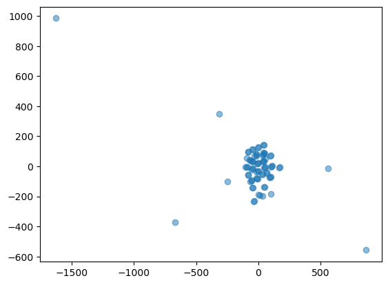

The project’s objective is to explore and demonstrate the effectiveness of PCA and t-SNE in reducing the dimensionality of complex, multimodal data while preserving essential information and enhancing data visualization. The dataset that will be used here is a record dataset containing detailed information regarding different motor vehicles. The tools and libraries are exlusively Python and it’s scikit-learn library.
Below are the python libraries used:
Show the code
import jsonimport numpy as npimport seaborn as snsimport matplotlib.pyplot as pltimport pandas as pdfrom sklearn.preprocessing import StandardScalerfrom sklearn.metrics import silhouette_samples, silhouette_scorefrom sklearn.decomposition import PCAfrom numpy import linalg as LAfrom sklearn.manifold import TSNEfrom sklearn.model_selection import train_test_split
# Convert all 'object' type columns to 'string'for col in record_data.select_dtypes(include=['object']).columns: record_data[col] = record_data[col].astype('string')# Verify the changesrecord_data.info()
# get y y = record_data['fuel_type'].unique().tolist()y
['gas', 'electricity']
Show the code
# Dropping non-numerical and unnecessary columnsrecord_data = record_data.drop(columns=['Unnamed: 0'])
Show the code
# Replace continuous missing values with mean of the column. check for Nan values again.cols = ['displacement', 'cylinders']record_data[cols] = record_data[cols].fillna(record_data[cols].mean())nan_count = record_data.isna().sum()print(nan_count)
city_mpg 0
class 0
combination_mpg 0
cylinders 0
displacement 0
drive 3
fuel_type 0
highway_mpg 0
make 0
model 0
transmission 0
year 0
dtype: int64
Show the code
# Replace categorical missing values with mode of the column. check for Nan values again.record_data['drive'] = record_data['drive'].fillna(record_data['drive'].mode().iloc[0])nan_count = record_data.isna().sum()print(nan_count)
city_mpg 0
class 0
combination_mpg 0
cylinders 0
displacement 0
drive 0
fuel_type 0
highway_mpg 0
make 0
model 0
transmission 0
year 0
dtype: int64
Show the code
# Using a for loop to replace categorical values with cat codescat_cols = ['class', 'drive', 'fuel_type', 'make', 'model', 'transmission']for col in cat_cols: record_data[col] = record_data[col].astype('category') record_data[col] = record_data[col].cat.codes# Display the altered DataFramerecord_data.head()
city_mpg
class
combination_mpg
cylinders
displacement
drive
fuel_type
highway_mpg
make
model
transmission
year
0
18
2
21
4.0
2.2
1
1
26
6
3
0
1993
1
19
2
22
4.0
2.2
1
1
27
6
3
1
1993
2
16
2
19
6.0
3.0
1
1
22
6
3
0
1993
3
16
2
18
6.0
3.0
1
1
22
6
3
1
1993
4
18
3
21
4.0
2.2
1
1
26
6
3
0
1993
Show the code
record_data.to_csv('cardf_cleaned.csv')
Show the code
# Split the dataset in X and y. since this is unsupervised learning, we will not use the y labels. you can choose to normalize the X data by using the StandardScaler function.x_cols = ['city_mpg', 'class', 'combination_mpg', 'cylinders', 'displacement', 'drive', 'highway_mpg', 'make', 'model', 'transmission', 'year' ]y_cols = ['fuel_type']X = record_data[x_cols] #'fuel_type' is the column we want to predict.y = record_data[y_cols]# Standardizing the dataX = StandardScaler().fit_transform(X)
Dimensionality Reduction with PCA
Application of PCA to the record dataset. Determining the optimal number of principal components to retain. Visualizing the reduced-dimensional data using PCA. Analyzing and interpreting the results.
/var/folders/w3/pq9m5d810bz24_jz2zl3s6pr0000gn/T/ipykernel_18364/4289367140.py:24: UserWarning: No data for colormapping provided via 'c'. Parameters 'cmap' will be ignored
ax.scatter(X[:,0],X[:,1],X[:,2],marker=".", cmap="viridis")
Show the code
# Only taking the top 3 eigenvalues and their corresponding eigenvectors for comparisontop_eigenvalues = w[:5]top_eigenvectors = v1[:, :5]# Creating a DataFrame to show the top 3 principal components and their explained variancepca_results = pd.DataFrame({'Eigenvalue': top_eigenvalues,'Explained Variance Ratio': pca.explained_variance_ratio_,'Cumulative Explained Variance': np.cumsum(pca.explained_variance_ratio_)})pca_results
Eigenvalue
Explained Variance Ratio
Cumulative Explained Variance
0
4.311723
0.387075
0.387075
1
2.363255
0.212156
0.599231
2
1.326911
0.119120
0.718351
3
0.000077
0.081513
0.799864
4
0.007928
0.072303
0.872167
The matching results from the manual calculation and the scikit-learn PCA show that the method works correctly. The scatter plot with the main lines drawn on it helps us see and understand how the data is arranged and how PCA changes it to a different form.
Apply PCA with all components to examine the explained variance ratio
Show the code
# Apply PCA with all components to examine the explained variance ratiopca = PCA()pca.fit_transform(X)# Explained variance ratioexplained_variance = pca.explained_variance_ratio_# Plotting the cumulative explained variance to determine the optimal number of componentsplt.figure(figsize=(10, 6))plt.plot(np.cumsum(explained_variance))plt.xlabel('Number of Components')plt.ylabel('Cumulative Explained Variance')plt.title('Explained Variance by Different Principal Components')plt.grid(True)plt.show()# Returning the cumulative explained variance for interpretationexplained_variance.cumsum()
The curve suggests that around 90% of the variance is explained by the first 4 principal components, as the curve starts to level off beyond this point.
PCA - Reduced Dimensional Data Visualization
Show the code
# Applying PCA with the optimal number of components (2 components for visualization)pca_optimal = PCA(n_components=2)reduced_data = pca_optimal.fit_transform(X)# Visualizing the reduced-dimensional dataplt.figure(figsize=(10, 6))plt.scatter(reduced_data[:, 0], reduced_data[:, 1])plt.xlabel('Principal Component 1')plt.ylabel('Principal Component 2')plt.title('PCA - Reduced Dimensional Data Visualization')plt.grid(True)plt.show()
Show the code
fuel_type_labels = y['fuel_type'].map({0: 'electricity', 1: 'gas'}) # Add the fuel type labels to the DataFramepca_df['fuel_type'] = fuel_type_labels# use seaborn to plot the scatter plot with huesplt.figure(figsize=(10, 6))sns.scatterplot(data=pca_df, x='PC1', y='PC2', hue='fuel_type', palette='tab10')plt.title('PCA - First two principal components with Fuel Type color coding')plt.xlabel('Principal Component 1 (PC1)')plt.ylabel('Principal Component 2 (PC2)')plt.legend(title='Fuel Type')plt.grid(True)plt.show()
Analysis and Interpretation of PCA Results
Analyzing the first graph, which shows the cumulative explained variance, the curve starts to plateau after the fourth component. By the fifth component, the cumulative explained variance is close to 90%. Therefore, retaining four or five components would be optimal for balancing data dimensionality reduction and information retention.
The first two principal components capture the majority of the variance in the data, as seen in the scatter plot without color coding. This indicates that most of the information can be compressed into two dimensions. When the fuel type is used as a hue in the scatter plot, there is a visible separation between electric and gas vehicles along the principal components, suggesting that PCA has managed to reduce the dimensions while still retaining the characteristics that can distinguish between the two fuel types.
In conclusion, for this dataset, retaining four or five components principal components is optimal for analysis, allowing most of the variance to be explained while significantly reducing the number of dimensions (almost by half). The visualizations indicate that these components are meaningful as they help in distinguishing between electric and gas vehicles.
Dimensionality Reduction with t-SNE
Implemention of t-SNE on the same dataset. Exploration of different perplexity values and their impact. Visualizion of the t-SNE output to reveal patterns and clusters. Comparison of t-SNE results with PCA results.
(80, 11)
RESULTS
shape : (80, 2)
First few points :
[[ 1.2051195 -3.1006622]
[ 1.4165833 -2.87457 ]]
Perplexity Value = 16
Show the code
### Perplexity Value = 16# LOAD DATAX = record_data.drop('fuel_type', axis=1)print(X.shape)# DO DIMENSIONALITY REDUCTIONX_embedded = TSNE(n_components=2, learning_rate='auto',init='random', perplexity=16).fit_transform(X)# EXPLORE RESULTSprint("RESULTS") print("shape : ",X_embedded.shape)print("First few points : \n",X_embedded[0:2,:])# PLOT plt.scatter(X_embedded[:,0],X_embedded[:,1], alpha=0.5)
(80, 11)
RESULTS
shape : (80, 2)
First few points :
[[-5.9813023 4.654429 ]
[-5.8530436 5.1955423]]
Perplexity Value = 1
Show the code
### Perplexity Value = 1# LOAD DATAX = record_data.drop('fuel_type', axis=1)print(X.shape)# DO DIMENSIONALITY REDUCTIONX_embedded = TSNE(n_components=2, learning_rate='auto',init='random', perplexity=1).fit_transform(X)# EXPLORE RESULTSprint("RESULTS") print("shape : ",X_embedded.shape)print("First few points : \n",X_embedded[0:2,:])# PLOT plt.scatter(X_embedded[:,0],X_embedded[:,1], alpha=0.5)
(80, 11)
RESULTS
shape : (80, 2)
First few points :
[[-48.516888 -15.93984 ]
[-52.88673 -22.104866]]

Analysis and Interpretation of t-SNE Results
With a perplexity value of 30, the t-SNE algorithm has successfully reduced the dimensionality of the data and the resulting plot shows the data in two dimensions. Based on the plots, we can infer that the dataset has some intrinsic clusters or groupings, which could be further analyzed for patterns or similarities. A lower perplexity of 16 means the model pays more attention to local structure, which can result in tighter clusters that may reveal more local groupings or subclusters within the data. Here, the clusters appear more compact and less dispersed, reflecting a focus on local similarities. For the perplexity level of 1, the t-SNE algorithm is primarily focusing on the local relationships between very close neighbors, which can lead to a more fragmented distribution of points with many small clusters that may not accurately reflect the overall structure of the data. The resulting visualization is much more scattered and less cohesive than those with higher perplexity values, making it difficult to derive any insight from the data.
Overall, t-SNE efficiently reduced the dimensions from 11 to 2. We can see clear groupings have formed with the perplexity values of 16 and 30.
Evaluation and Comparison
Evaluation of the effectiveness of PCA and t-SNE in terms of preserving data structure and information, comparison of the visualization capabilities of PCA and t-SNE. and the trade-offs and scenarios where one technique may outperform the other: